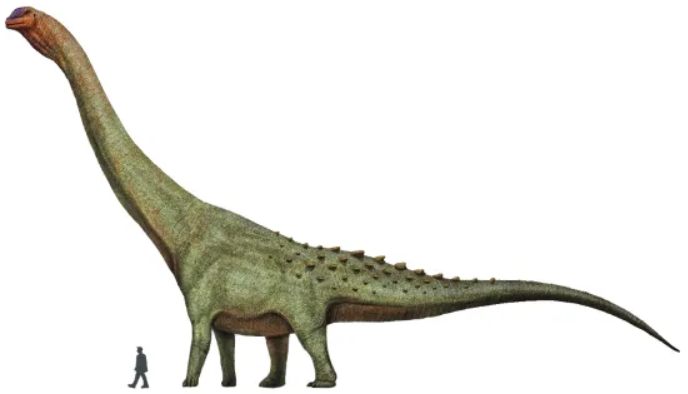

Patagotitan mayorum
| Nombre: Patagotitan mayorum | Grupo: Sauropodo |
| Tamaño: 40 mts largo | Peso: 80 toneladas |
| Periodo: Cretácico | Región: Chubut |
Encontrado en la región de Chubut, el Patagotitan mayorum es el mayor dinosaurio de la historia encontrado y el único que se conoce del género saurópodo titanosauriano. Este dinosaurio argentino vivió hace 101 millones de años, durante el período del Cretácico. Además de este hallazgo en 2014, el pasado 2021 se encontraron más de 100 huevos en Argentina que permitieron afirmar que estos animales convivían en manadas. También es, de entre todos los fósiles de dinosaurios encontrados, el más grande. Todavía se estudia si el Patagotitan mayorum llegó a alcanzar los 40 metros de largo, contando la cola, además de pesar unas 80 toneladas en total. Cabe destacar que se han llegado a encontrar 6 muestras distintas en la Patagonia Argentina de este dinosaurio, caracterizado por tener la cabeza más pequeña en comparación con el cuello y la cola.

Kritosaurus navajovius
| Nombre: Kritosaurus navajovius | Grupo: Ornitópodo |
| Tamaño: 10 mts largo | Peso: 4 toneladas |
| Periodo: Cretácico | Región: Rio Negro |
Al igual que el Saltasaurus loricatus, este dinosaurio argentino es el único conocido dentro de su género extinto Kritosaurus. La traducción a su nombre es "reptil separado". Vivió hace aproximadamente unos 73 millones de años. Se trata de un dinosaurio de pico de pato incompleto hoy en día que era herbívoro. Una curiosidad de este dinosaurio es que podía caminar tanto en cuatro como en dos patas, además de que su cabeza era bastante pequeña con un bulto en la parte superior que recuerda a una corona. Medía alrededor de 10 metros y podía pesar hasta 4 toneladas.

Carnotaurus sastrei
| Nombre: Carnotaurus sastrei | Grupo: Terapodo |
| Tamaño: 19 mts de largo y 3.5 de alto | Peso: 2 toneladas |
| Periodo: Cretácico | Región: Chubut |
Traducido como el "toro carnívoro de Anselmo Sastre", el carnotauro es la única especie del género extinto Carnotaurus. Este dinosaurio carnívoro vivió hace 72 o 70 millones de años y, una de las características que más destacan de él son los dos cuernos que sobresalen de la parte superior de su cabeza, justo por encima de los ojos. Se trata de un dinosaurio argentino con complexión media/grande, ya que podía medir entre 8 y 9 metros de largo y 3,5 de alto. Su peso, por otro lado, era de entre 1.350 y 2.100 kilos. Por último, también llama la atención de él que sus brazos eran peculiarmente cortos.

Herrerasaurus ischigualastensis
| Nombre: Herrerasaurus ischigualastensis | Grupo: Saurisquio |
| Tamaño: 6 mts de largo | Peso: 350 Kg |
| Periodo: Triasico superior | Región: San Juan |
La traducción literaria de su nombre significa "lagarto de herrera de Ischigualasto" y, al igual que los anteriores, es el único conocido dentro de su género extinto de Herrerasaurus. Este dinosaurio de Argentina vivió hace 231,4 millones de años aproximadamente. Se trata de uno de los dinosaurios argentinos más primitivos y carnívoros bípedos. Su cuerpo estaba formado por una larga cola y una cabeza sorprendentemente pequeña y, la reconstrucción de fósiles de este dinosaurio, se encuentra en el Museo Senckenberg de Historia Natural, en Berlín, Alemanía.